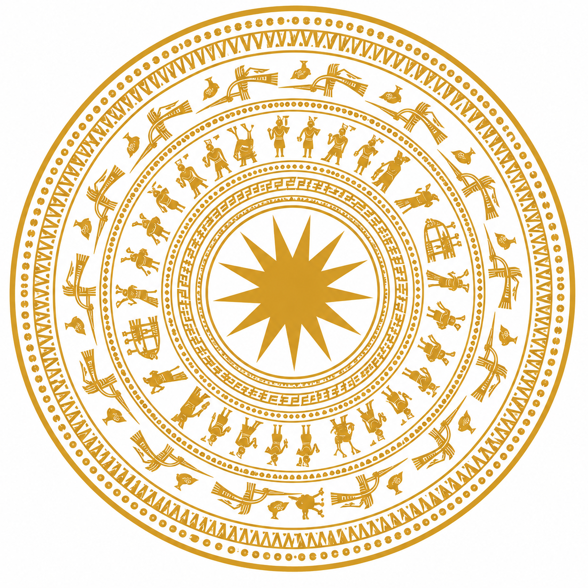
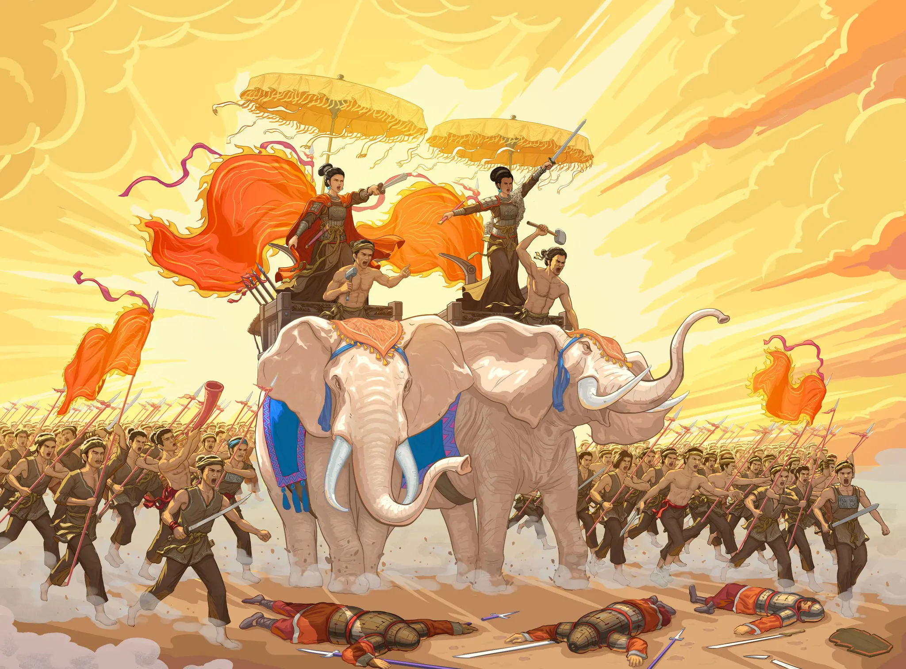
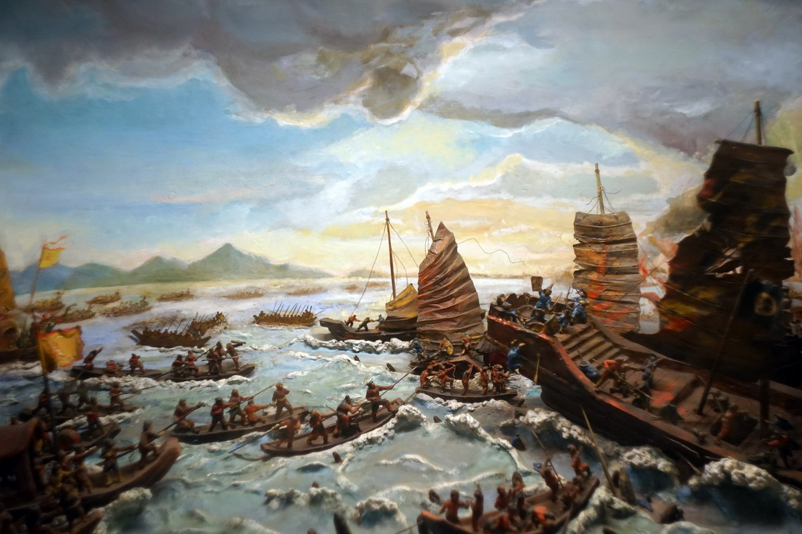
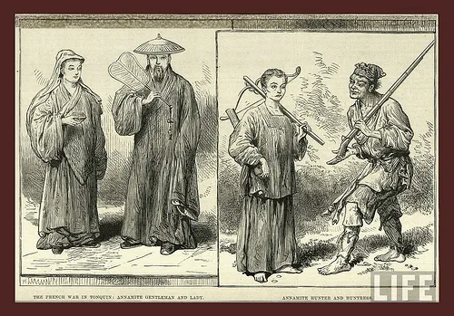

Công xã nguyên thủy · ~2879 TCN
Công xã nguyên thủy · ~2879 TCN
Sự ra đời của nhà nước Văn Lang không đến từ ý chí thần linh, mà từ chính trình độ phát triển của lực lượng sản xuất buổi bình minh dân tộc.
Đọc bài →

Công xã nguyên thủy · ~700 TCN
Trống đồng, tín ngưỡng phồn thực, tục thờ Mặt Trời — tất cả đều là tấm gương phản chiếu phương thức sản xuất của một xã hội nông nghiệp.
Đọc bài →

Bắc thuộc · Năm 40
Trước ách đô hộ tàn bạo của nhà Hán, ngọn lửa khởi nghĩa bùng lên — minh chứng cho vai trò động lực của đấu tranh giai cấp và dân tộc.
Đọc bài →

Bắc thuộc → Độc lập · Năm 938
Ngô Quyền đại phá quân Nam Hán, khép lại nghìn năm Bắc thuộc — bài học về sự gặp gỡ giữa sức mạnh nhân dân và lãnh tụ biết nắm bắt quy luật.
Đọc bài →
Phong kiến tự chủ · Năm 1010
Chiếu dời đô năm 1010 không chỉ là một quyết định chính trị, mà là sự đáp ứng tất yếu của thượng tầng trước một nền kinh tế đang chuyển mình.
Đọc bài →

Phong kiến tự chủ · 1418 – 1427
Mười năm nếm mật nằm gai, từ núi rừng Thanh Hóa đến chiến thắng vang dội — Lam Sơn là minh chứng cho sức mạnh của quần chúng được quy tụ.
Đọc bài →